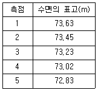
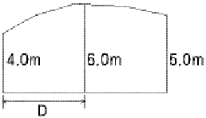
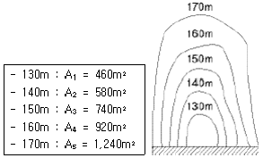
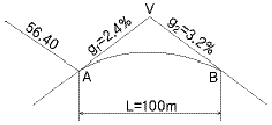
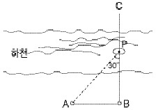
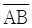
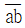
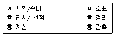
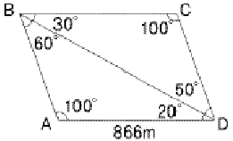
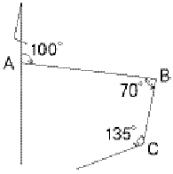

측량및지형공간정보산업기사 (2006-09-10 기출문제)
1과목: 응용측량
1. 하천의 수면구배를 정하기 위해 100m 간격으로 동시수위를 측정하여 다음의 결과를 얻었다. 그 결과로부터 구한 이 구간의 평균 수면구배는?

- 1:500
- 1:750
- 1:1,000
- 1:1,250
(정답률: 알수없음)

2. 반경이 같지 않은 2개의 원곡선이 접속점에서 공통접선을 갖고 중심이공통접선과 같은 방향에 있는 곡선은?
- 반향곡선
- 종단곡선
- 복심곡선
- 완화곡선
(정답률: 알수없음)
3. 다음 중 댐 건설을 위한 조사측량에서 댐사이트의 평면도 작성에 가장 적합한 측량방법은?
- 평판측량
- 지상사진측량 또는 항공사진측량
- 시거측량
- 간접수준측량
(정답률: 알수없음)
4. 노선측량에서 반지름 150m인 원곡선을 설치할 때 교각이 76° 24‘ 이면 교점에서 곡선의 시점까지의 거리는?
- 117.7m
- 118.0m
- 118.7m
- 119.0m
(정답률: 알수없음)
5. 체적계산에서 점고법에 대한 설명 중 틀린 것은?
- 넓은 지역의 정지작업 또는 매립 등의 토공량 산정에 편리하다.
- 사각형이나 삼각형으로 구분할 때, 표면은 곡면으로 간주한다.
- 지형의 기복이 작은 지역은 크게 구분하고 기복이 큰 경우는 작게 구분한다.
- 양단면이 평면이면 양단면 중심간 거리에 수평면적을 곱한다.
(정답률: 알수없음)
6. 그림과 같은 토지의 면적을 심프슨 제1공식을 적용하여 구한 값이 44m2라면 거리 D는 얼마인가?

- 4.0m
- 4.4m
- 8.0m
- 8.8m
(정답률: 알수없음)
7. 토공작업을 요하는 노선의 종단면도에 계획선을 넣을 때 고려해야 할 사항 중 틀린 것은?
- 계획경사는 돌 수 있는 대로 요구에 맞게 한다.
- 경사와 곡선을 될 수 있는 대로 변설하고 제한 내에 있도록 한다.
- 절토는 성토와 대략 같게 되도록 한다.
- 절토는 성토의 이용이 가능하도록 운반거리를 고려한다.
(정답률: 알수없음)
8. 1:5,000 축척의 지적도상에서 16cm2로 나타나 있는 정방형 토지의 실제 면적은?
- 80,000m2
- 40,000m2
- 8,000m2
- 4,000m2
(정답률: 알수없음)
9. 경관의 구성요소에 해당하지 않는 것은?
- 대상계
- 경관장계
- 상호성계
- 입체계
(정답률: 알수없음)
10. 터널측량의 작업순서는?
- 답사-예측-지표설치-지하설치
- 예측-답사-지표설치-지하설치
- 답사-예측-지하설치-지표설치
- 예측-답사-지하설치-지표설치
(정답률: 알수없음)
11. 완화곡선에 대한 다음 설명 중 바르지 못한 것은?
- 직선부와 곡선부 사이에 넣는 특수곡선이다.
- 반지름은 0에서 조금씩 증가하여 일정한 값이 된다.
- 완화곡선의 접선은 종점에서 원호를 접한다.
- 종류는 클로소이드, 3차 포물선, 렘니스케이트 등이 있다.
(정답률: 알수없음)
12. 단곡선 설치에서 접선과 현이 이루는 각을 이용하여 설치 방법으로 정확도가 비교적 높아 많이 이용되는 것은?
- 접선에 대한 지거법
- 지거에 대한 설치법
- 장현에서 종거에 의한 설치법
- 편각에 의한 설치법
(정답률: 알수없음)
13. 다음 터널측량에 관한 사항으로 옳지 않은 것은?
- 터널 측량은 갱외(坑外)측량과 갱내(坑內)측량, 갱내외(坑內外) 연결측량으로 나눈다.
- 터널의 길이, 방향은 삼각측량 또는 트래버스 측량으로 정한다.
- 갱내에 수준측량은 레벨 수준척으로만 측량한다.
- 갱내 측량에서는 기계의 십자선, 표척눈금등에 조명이 필요하다.
(정답률: 알수없음)
14. 하천 측량에 이용되는 삼각망으로 가장 적합한 것은?
- 개방삼각망
- 유심삼각망
- 단열삼각망
- 단삼각망
(정답률: 알수없음)
15. 그림과 같은 지형의 계곡에 댐을 만들어 저수하고자 한다. 댐의 저수위를 170m로 할 때의 저수량은 약 얼마인가? (단, 등고선 간격은 10m이고 각 등고선으로 둘러싸인 면적은 다음과 같다.)

- 20,600m3
- 25,500m3
- 30,600m3
- 35,500m3
(정답률: 알수없음)
16. 그림과 같이 2차포물선을 이용하는 종단곡선(Vertical Curve)에서 A점의 계획고(Elevation)가 56.40m일 때 B점의 계획고는 얼마인가?

- 55.80m
- 56.00m
- 56.36m
- 56.80m
(정답률: 알수없음)
17. 터널 내에 곡선을 설치하려고 한다. 해당 방법이 아닌 것은?
- 접선편거법
- 현편거법
- 외접다각형법
- 현각현장법
(정답률: 알수없음)
18. 축척 1:10,000의 도면상에서 구적기를 사용하여 면적을 측정하였더니 2,800m2이었다. 그런데 이 도면은 종횡 모두 1%씩 수축되어 있다면 실제 면적은?
- 2,829m2
- 2,857m2
- 2,745m2
- 2,773m2
(정답률: 알수없음)
19. 다음 중 하천 수위의 변화에 따라 변동하는 것으로 평수위(平水位)에 의햐 결정되는 것은?
- 수애선(水涯線)
- 지평선(地平線)
- 수평선(水平線)
- 평균수위(M.W.L)
(정답률: 알수없음)
20. 그림과 같이 하천의 BC선에 연하여 심천측량을 실시하려고 A점에서 CB에 직각으로 하여 AB=100m 되게 하였다. 배가 P에 있을 때 ∠APB를 측정한 결과 30°였다면 BP의 거리는?

- 50.00m
- 57.74m
- 86.60m
- 173.20m
(정답률: 알수없음)
2과목: 사진측량 및 원격탐사
21. 항공사진을 촬영방향에 따라 분류할 때 다음 설명으로 옳은 것은?
- 경사각 32° 이내의 사진을 수진사진이라 한다.
- 고각도 경사사진은 사진상에 지평선이 나타나 있어야 한다.
- 저각도 경사사진은 사진상에 지평선이 나타나 있어야 한다.
- 광축이 수평선에 거의 일치하도록 지상에서 촬영하는 사진을 수직사진이라 한다.
(정답률: 알수없음)
22. 수록된 데이터의 내용, 품질, 작성자, 작성일자 등과 같은 유용한 정보를 제공하여 데이터 사용의 편리성을 위한 데이터는?
- 위상데이터
- 공간데이터
- 속성데이터
- 메타데이터
(정답률: 알수없음)
23. 사진측량의 표정점 선정시 유의 해야 할 사항에 대한 설명으로 틀린 것은?
- X, Y, H가 동시에 정확하게 결정될 수 있어야 한다.
- 촬영점에서 대상물이 잘 보여야 하고 시간적으로 변하지 않아야 한다.
- 경사가 급한 대상물 면이나 경사변환선상을 사용하는 것이 유리하다.
- 가상상, 가상점을 사용해서는 안된다.
(정답률: 알수없음)
24. 수직항공사진상에 나타난 교량의 길이가 1.2mm이고, 이 교량의 실제 길이는 24m이다. 이 항공사진 한 장에 포괄되는 토지의 면적은 약 얼마인가? (단, 화면에 크기는 23cm×23cm, 초점거리 f=150mm이다.)
- 11km2
- 16km2
- 21km2
- 42km2
(정답률: 알수없음)
25. 항공사진측량에 의하여 제작된 수치지도의 위치 정확도에 영향을 주는 요소와 가장 거리가 먼 것은?
- 도화기의 정확도
- 지상기준점의 정확도
- 사진의 축척
- 지도 레이어의 개수
(정답률: 알수없음)
26. 사진판독의 기본 요소와 가장 거리가 먼 것은?
- 주점
- 형상과 크기
- 음영
- 색조
(정답률: 알수없음)
27. 초점거리 21cm, 화면의 크기 18cm×18cm인 카메라로 평탄지로부터 3,000m 상공에서 종중복도(Over Lap) 60%로 촬영하였다. 이 사진에 찍혀진 주점 기선 거리는?
- 1.8cm
- 7.2cm
- 9.0cm
- 13.8cm
(정답률: 알수없음)
28. 같은 고도에서 보통각 카메라(초점거리 21cm, 화면크기 18cm×18cm, 화각 60°)로 찍은 사진과 광각 카메라(초점거리 15cm, 화면크기 23cm×23cm, 화각 90°)로 찍은 사진의 포괄면적 비는 약 얼마인가?
- 1:2
- 1:3
- 1:4
- 1:5
(정답률: 알수없음)
29. 일반적 원격탐사 영상의 해상도 중에 영상의 최소단위인 화소가 지상의 거리를 어느 정도 표현하는가를 나타내는 것을 무엇이라 하는가?
- 분광해상도(Spectral Resolution)
- 방사해상도(Radiometric Resolution)
- 공간해상도(Spatial Resolution)
- 주기해상도(Temporal Resolution)
(정답률: 알수없음)
30. 지리정보시스템 자료구조의 일관성과 호환성 확보를 위해서는 데이터베이스 표준화가 필수이다. 지리정보 데이터베이스 표준화에 필요한 내용과 가장 거리가 먼 것은?
- 지리정보 레이어에 포함할 각 공간정보와 속성정보에 대한 지침의 정의
- 공간정보의 입출력 포맷과 속성정보에 대한 표현방식의 정의
- 사용목적에 맞는 기능이 포함된 프로그래밍 언어 및 소프트웨어의 정의
- 효과적인 데이터의 통합과 분석을 위해 데이터별 자료분류체계와 코드의 정의
(정답률: 알수없음)
31. 다음은 래스터자료에 대한 특징을 설명한 것이다. 틀린 것은?
- 자료구조가 간단하다.
- 다양한 공간분석을 할 수 있다.
- 원격탐사 자료와 연결시키기가 쉽다.
- 그래픽 자료의 양이 적다.
(정답률: 알수없음)
32. 미국에서 개발하여 지구자원탐사의 목적으로 쏘아올린 위성으로 원래의 명칭은 ERTS였던 위성은 무엇인가?
- MOSS
- SPOT
- IKONOS
- LANDSAT
(정답률: 알수없음)
33. 입체시에 대한 설명으로 틀린 것은?
- 광축은 거의 동일 수평면 내에 있어야 한다.
- 입체시를 위해 충분히 중복되어 있어야 한다.
- 2매의 사진축척이 거의 같아야 한다.
- 기선고토비가 약 2.5가 되어야 한다.
(정답률: 알수없음)
34. 편위 수정과 관계없는 것은?
- 사진지도 제작과 밀접한 관계가 있다.
- 거의 수직사진을 엄밀 수직사진으로 고치는 방법이다.
- 특히 산악지역의 적용에 유리하다.
- 4점의 평면좌표를 이용하여 편위수정을 한다
(정답률: 알수없음)
35. 중심투영에 의해 촬영되는 사진의 투영특성과 대상물의 높이에 의해 사진 상에 대상물의 평면 위치가 이동하여 나타나는 현상은?
- 과고감
- 대기굴절
- 렌즈왜곡
- 기복변위
(정답률: 알수없음)
36. 도화기의 C계수가 1,200인 도화기로 축척 1:60,000 항공사진을 도화할 때 최소 등고선의 간격은? (단, 초점거리는 200mm임)
- 1m
- 2m
- 5m
- 10m
(정답률: 알수없음)
37. 다음 중 GIS의 자료입력 방법이 아닌 것은?
- 수동방식(디지타이저)에 의한 방법
- 자동방식(스캐너)에 의한 방법
- 항공사진에 으한 해석도화 방법
- 잉크젯 프린터에 의한 도면 제작 방법
(정답률: 알수없음)
38. 다음 중 노드(node)에 대한 설명으로 옳지 않은 것은?
- 호의 시작이나 끝을 나타내는 결점이다.
- 점에서 만나는 아크와 위상관계로 연결된다.
- 데이터와 프로그램을 컴퓨터가 이해할 수 있도록 하는 부호이다.
- 선 오브젝트의 끝점이나 다각선 혹은 영역 오브젝트의 일부분을 이루는 선의 끝점이다.
(정답률: 알수없음)
39. 지리정보시스템의 정보유형 중 하나인 속성정보라 볼 수 없는 것은?
- 설악산 국립공원 내 야생동식물 분포 변화량
- 신행정수도 주변의 대규모 위락단지 개발 후보지 위치도
- 강원도의 천연지하자원별 매장량
- 서울특별시의 연도별 지하철 이용자 증가량
(정답률: 알수없음)
40. 기계적 표정에 있어서 상호표정과 가장 관계가 깊은 것은?
- 초점거리 보정
- 종시차 소거
- 축척 및 경사보정
- 시간오차의 소거
(정답률: 알수없음)
3과목: GIS 및 GPS
41. 표준길이 30m에 대하여 6mm 늘어난 테이프로 정사각형의 지역을 측량한 결과 62,500m2를 얻었다. 실제의 면적은?
- 62.475m2
- 62.490m2
- 62.151m2
- 62.525m2
(정답률: 알수없음)
42. 트래버스측량에서 전 측선의 길이가 1,100m이고 위거오차가 +0.23m, 경거오차가 -0.35m일 때 폐합비는?
- 약 1:4,200
- 약 1:3,200
- 약 1:2,600
- 약 1:1,400
(정답률: 알수없음)
43. 축척을 모르고 있는 지도상의 A, B점이 축척 1:25,000 지형도의 a, b점과 일치됨을 알았다. 이 때

=27.5cm,
=5.5cm라면 미지의 지도 축척은 얼마인가?- 1:2,500
- 1:5,000
- 1:10,000
- 1:20,000
(정답률: 알수없음)
44. 표고 h=356.42m인 지역에 설치한 기선의 길이가 500m일 때 평균 해면상의 길이로 보정한 값은? (단, R=6,367km임)
- 499.854m
- 499.974m
- 500.256m
- 500.456m
(정답률: 알수없음)
45. 다음의 수준측량 용어 중 옳지 않은 것은?
- 기준면은 지평면이라고도 하며 연직선에 직교하는 평면을 말한다.
- 기준면은 수년동안 관측하여 얻은 평균해수면을 사용한다.
- 지평면은 연직선에 직교하는 평면을 말한다.
- 수준면은 연직선에 직교하는 모든 점을 잇는 곡면을 말한다.
(정답률: 알수없음)
46. 다음 측량기기 중 거리관측과 각관측을 동시에 할 수 있는 장비는?
- Theodolite
- EDM
- Total Station
- Level
(정답률: 알수없음)
47. 각 측량의 기계적 오차 중 망원경의 정ㆍ반 위치에서 측정값을 평균해도 소거되지 않는 오차는?
- 연직축 오차
- 시준축 오차
- 수평축 오차
- 편심 오차
(정답률: 알수없음)
48. 지구의 적도방지름이 6,370km이고 편평률이 1:299라고 하면 적도반지름과 극반지름의 차이는 얼마인가?
- 21.3km
- 31.0km
- 40.0km
- 42.6km
(정답률: 알수없음)
49. 기지삼각점을 이용하여 삼각측량을 할 경우 작업순서로 가장 옳은 것은?

- ㉮-㉯-㉰-㉳-㉲-㉱
- ㉮-㉰-㉯-㉳-㉲-㉱
- ㉯-㉮-㉱-㉰-㉳-㉲
- ㉰-㉮-㉯-㉳-㉲-㉱
(정답률: 알수없음)
50. 다음 중에서 GPS(Gloval Positioning System)의 활용분야와 가장 거리가 먼 것은?
- 절대좌표해석
- 상대좌표해석
- 변위량 보정
- 영상복원
(정답률: 알수없음)
51. 현재 GPS(위성측위시스템)를 관리하고 운영하는 구성요소를 3가지로 구분할 때 이와 거리가 먼 것은?
- 제어 부분
- 우주 부분
- 사용자 부분
- 프로그램 부분
(정답률: 알수없음)
52. 수준측량에서 전시와 후시의 시준거리를 같게 하는 이유오 가장 거리가 먼 것은?
- 구차와 기차를 소거한다.
- 초점나사 움직임으로 인한 오차를 소거한다.
- 시준선과 기포관축이 평행하지 않는 기계적 오차를 소거한다.
- 기계의 정치에 의한 오차를 소거한다.
(정답률: 알수없음)
53. 방위각 287° 33‘ 20“의 역방위각은 얼마인가?
- 72° 26‘ 40“
- 107° 33‘ 20“
- 187° 33‘ 20“
- 340° 26‘ 40“
(정답률: 알수없음)
54. 그림에서 측선 CD의 거리는?

- 500m
- 550m
- 600m
- 650m
(정답률: 알수없음)
55. 다음의 오차에 대한 설명으로 옳은 것은?
- 대기의 밀도에 따라 광선이 직진하지 않고 구부러져서 생기는 오차를 구차라 한다.
- 삼각수준측량에서 구차는 낮게, 기차는 높게 조정한다.
- 구차와 기차가 합성된 오차를 양차라 한다.
- 지구의 곡률에 의한 오차를 기차라 한다.
(정답률: 알수없음)
56. 트래버스 측정 B의 좌표는 (100, 100)이고, BC측선의 길이는 100m라 할 때 C점(x, y)의 좌표는? (단, AB측선의 방위각은 100°, 좌표의 단위는 m이다.)

- (13.4, 50)
- (50, 12.5)
- (70, 13.4)
- (50, 70)
(정답률: 알수없음)
57. 기포관의 강도는 다음 중 무엇으로 표시하는가?
- 기포 1눈금의 이동에 따른 경사각의 크기로 표시되는 각
- 기포관의 길이가 경사각의 크기로 표시되는 각
- 기포관의 두 눈금 이동의 경사각의 크기로 표시되는 각
- 기포관의 눈금 양단이 경사각의 크기로 표시되는 각
(정답률: 알수없음)
58. 축척 1:5,000 지형도의 주곡선 간격은 얼마인가?
- 5m
- 10m
- 20m
- 50m
(정답률: 알수없음)
59. 다음 중 GPS의 위치 결정원리로 가장 타당한 것은?
- 관측점의 위치좌표가 (x, y, z)이므로 2개의 위성에서 전파를 수신하여 관측점의 위치를 구한다.
- 위성궤도에 대해 종방향으로는 정사투영에 의해, 횡방향으로는 중심투영에 의해 영상이 취득된 후 3차원 위치해석을 한다.
- 관측점 좌표(x, y, z)와 시간 t의 4차원 좌표의 결정방식으로 4개 이상의 위성에서 전파를 수신하여 관측점의 위치를 구한다.
- 레이저광 펄스를 이용하여 우주공간과의 관계를 감안하여 지상 관측점의 위치 (x, y, z)를 구한다.
(정답률: 알수없음)
60. 지구의 반경 R=6,370km이고 거리측정 정도를 1/105까지 허용하면 평면측량의 한계는 반경(km) 얼마인가?
- 35km
- 70km
- 140km
- 22km
(정답률: 알수없음)
4과목: 측량학
61. 건설교통부장관 또는 국토지리정보원장의 권한 중 측량협회에 위탁한 권한으로 옳은 것은?
- 공공측량의 심사
- 공공측량 작업규정의 승인
- 새로운 측량기술의 연구ㆍ개발
- 기본측량을 위한 표지 설치의 통지
(정답률: 알수없음)
62. 전문대학을 졸업한 자로서 12년 이상 측량업무를 수행한 학력ㆍ경력자의 기술등급은?
- 특급기술자
- 고급기술자
- 중급기술자
- 초급기술자
(정답률: 알수없음)
63. 기본측량을 실시하기 위하여 토지, 건물, 죽목, 기타 공작물을 수용 또는 사용하는 경우, 손실보상에 관한 협의는 누가 하는가?
- 건설교통부장관과 그 손실을 받은 자가 협의한다.
- 건설교통부장관과 측량협회가 협의한다.
- 국토지리정보원장과 그 손실을 받은 자가 협의한다.
- 국토지리정보원장과 측량협회가 협의한다.
(정답률: 알수없음)
64. 측량 기준 중 거리와 면적은 다음 중 어떤 값으로 표시하는가?
- 평면상의 값으로 한다.
- 지구표면상의 값으로 한다.
- 회전타원체면상의 값으로 한다.
- 지평면상의 값으로 한다.
(정답률: 알수없음)
65. 공공측량 또는 일반측량에서 제외되는 측량으로 볼 수 없는 것은?
- 지적법에 의한 지적측량
- 국지적측량 또는 고도의 정확도를 요하지 아니하는 측량으로 건설교통부장관이 고시하는 측량
- 수로업무법에 의한 수로측량
- 관계법령의 규정에 의하여 허가ㆍ인가 등의 신청서에 첨부하여야 할 측량도서를 작성하기 위하여 실시되는 측량
(정답률: 알수없음)
66. 다음 중 기본측량으로 발생한 손실 보상의 재결기관은?
- 관할토지수용위원회
- 고등법원
- 대법원
- 국토지리정보원
(정답률: 알수없음)
67. 측량표 중 일시 표지에 표시할 내용으로 옳지 않은 것은?
- 명칭
- 설치자 성명
- 관리자 성명
- 측량표의 형상
(정답률: 알수없음)
68. 기본측량의 실시자는?
- 건설교통부장관
- 국토지리정보원장
- 시장, 군수
- 도지사
(정답률: 알수없음)
69. 다음 일반측량 중에서 공공측량으로 지정할 수 있는 사항이 아닌 것은?
- 하천개수, 철도, 수로시공에 수반하는 횡단측량
- 국토지리정보원장이 발행하는 지도의 축척과 동일한 축척의 지도제작
- 측량실시지역의 면적이 1km2이상인 삼각측량, 지형측량 및 평면측량
- 활영지역의 면적이 1km2이상인 측량용 사진의 촬영
(정답률: 알수없음)
70. 측량심의회의 심의사항이 아닌 것은?
- 측량기술자의 품위보전
- 측량도서의 발간
- 기본측량에 관한 계획의 수립 및 실시
- 측량기술의 연구ㆍ발전
(정답률: 알수없음)
71. 다음 중 심의회의 위원장은 누가 지명하는가?
- 건설교통부장관
- 대한측량협회의 회장
- 국토지리정보원장
- 측량심의회 위원의 투표로 선출
(정답률: 알수없음)
72. 지도의 내도곽에 표시되는 것으로 옳은 것은?
- 도엽명, 도엽번호
- 인쇄연도 및 축척
- 발생자 및 편집연도
- 지물 및 지형
(정답률: 알수없음)
73. 지도도식 규칙의 제정목적이 아닌 것은?
- 지형ㆍ지물 및 지명 등을 나타내는 기호나 문자 등의 표시방법의 통일
- 지도의 축척을 결정
- 지도의 정확하고 쉬운 판독에 기여
- 지도의 도식에 관한 기준을 정함
(정답률: 알수없음)
74. 다음 기본측량에 대한 설명 중 옳은 것은?
- 측량표는 크게 기선표석, 삼각점 표석, 방위표석, 수준점 표석으로 나눌 수 있다.
- 측량표의 관리는 시ㆍ도지사가 담당한다.
- 시장, 군수 또는 구청장은 그 관할구역안에 있는 측량표를 감시하여야 한다.
- 건설교통부장관은 기본측량에 관한 장기계획 및 년간 계획을 수립한다.
(정답률: 알수없음)
75. 다음 중 측량업 등록 취소사항이 아닌 것은?
- 다른 사람에게 자기의 등록증 또는 등록수첩을 대여한 때
- 계속하여 1년이상 휴업한 때
- 영업의 정지처분에 위반한 때
- 허위 기타 부정한 방법으로 측량업의 등록을 한 때
(정답률: 알수없음)
76. 기본측량을 위한 영구표지 또는 일시표지를 설치할 때에 국토지리정보원장이 행할 사항은?
- 표지의 종류와 설치장소를 당해 지역의 경찰서장에게 통지한다.
- 표지의 종류와 설치장소를 관계 시ㆍ도지사에게 통지한다.
- 표지의 종류와 설치장소를 측량회사에게 통지한다.
- 표지의 종류와 설치장소를 당해 시장, 군수에게 통지한다.
(정답률: 알수없음)
77. 측량기기의 성능검사에 필요한 방법 및 절차 기타 성능검사에 필요한 세부사항을 정하는 사람은?
- 국토개발원장
- 국토지리정보원장
- 건설교통부장관
- 도시계획국장
(정답률: 70%)
78. 측량업자가 고의 또는 과실로 인하여 측량을 부정확하게 한 경우에 받을 수 있는 영업 정지처분의 기간은 최대 얼마인가?
- 1개월
- 3개월
- 6개월
- 1년
(정답률: 알수없음)
79. 측량심의회의 구성원의 기준으로 옳은 것은?
- 위원장 1인을 포함한 20인 이내의 위원
- 위원장 1인을 포함한 9인 이내의 위원
- 위원장 1인을 포함한 7인 이내의 위원
- 위원장 1인을 포함한 10인 이내의 위원
(정답률: 알수없음)
80. 공공측량의 측량성과와 측량기록 사본의 교부를 받고자 하는 자는 어디에 신청하는가?
- 공공측량계획기관
- 공공측량작업기관
- 국토지리정보원장
- 시장, 군수
(정답률: 알수없음)
따라서 정답은 "1:500"이다.